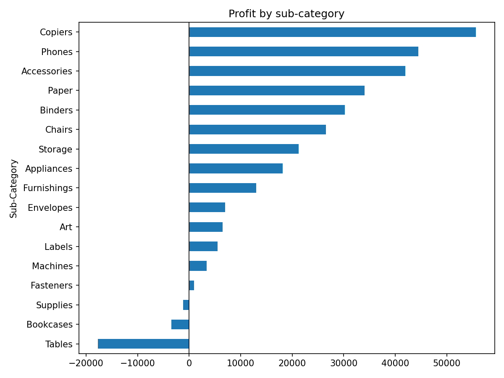
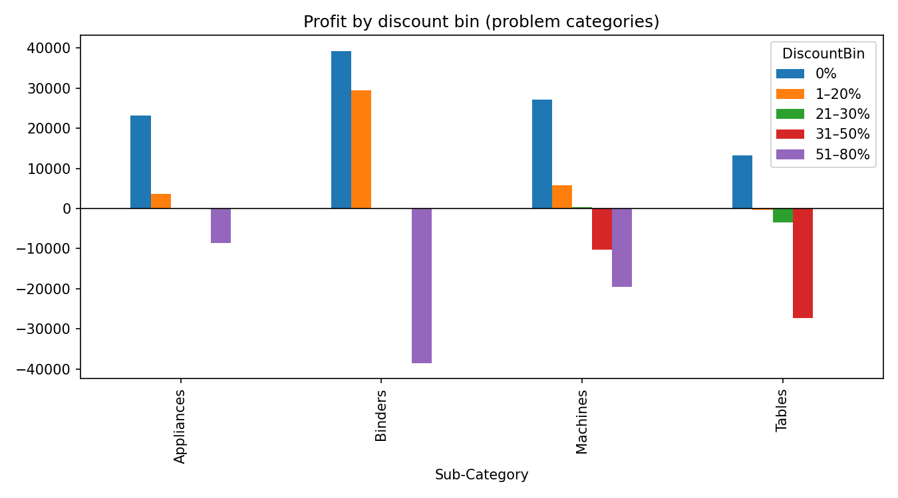

Superstore EDA
Project page · Rendered notebook · Download .ipynb
Question
Where does Superstore lose profit (sub-category, discount level, region × segment, ship mode), and what would capping discounts at 20% have changed?
Data
Superstore Dataset (Kaggle). 9994 order lines × 21 columns (US only), 5009 orders, 793 customers. Read with latin-1 encoding because the CSV has non-UTF-8 bytes.
Methods and tools
Python, pandas, matplotlib
- Sanity checks: describe(), discount levels, quantity range, negative-profit rows (1871), zero sales (0), duplicate Row IDs (0).
- Derived ship days, profit margin and discount bins (0%, 1–20%, 21–30%, 31–50%, 51–80%) with
pd.cut. - Grouped sales/profit/margin by sub-category × discount bin, sub-category, region × segment and ship mode.
- Charts: net profit by sub-category; profit by discount bin for Binders, Tables, Appliances and Machines.
- Counterfactual: recomputed each line’s list price, capped discount at 20%, kept cost fixed, and compared total profit.
Key findings
- Three sub-categories lose money overall: Tables −$17,725, Bookcases −$3,473, Supplies −$1,189. The largest profits are Copiers $55,618, Phones $44,516 and Accessories $41,937.
- Total profit by discount bin: 0% $320,988, 1–20% $100,785, 21–30% −$10,369, 31–50% −$48,448, 51–80% −$76,559 (mean line margin −1.139 in the top bin).
- Worst sub-category × discount cells: Binders 51–80% −$38,510 (613 lines), Tables 31–50% −$27,296 (122 lines), Machines 51–80% −$19,579 (23 lines).
- 1871 of 9994 lines have negative profit.
- By region × segment, the lowest profit is South Home Office ($4,621) and the lowest margin is Central Consumer (0.034, avg discount 0.252).
- By ship mode, margins range from 0.121 (Standard Class) to 0.139 (First Class).
- 20% discount cap counterfactual: 1393 lines affected; profit $286,397 → $505,588 (delta +$219,191). Largest deltas: Binders +$78,343, Machines +$55,816, Tables +$29,500. This estimate assumes sales volume stays the same after the cap.
Numbers are taken directly from the notebook outputs.
Charts


Notebook
View the rendered notebook with all saved outputs, or download the .ipynb.